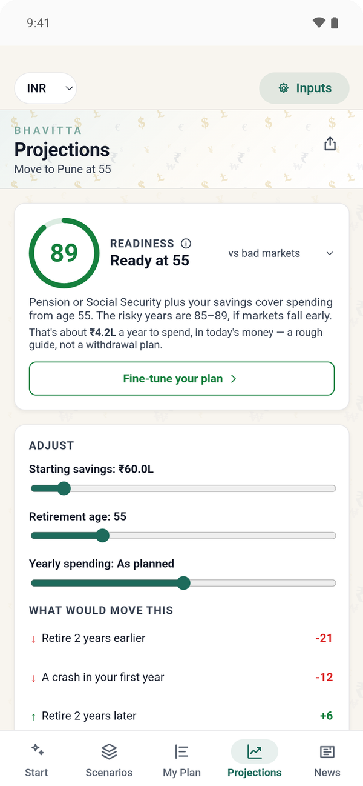
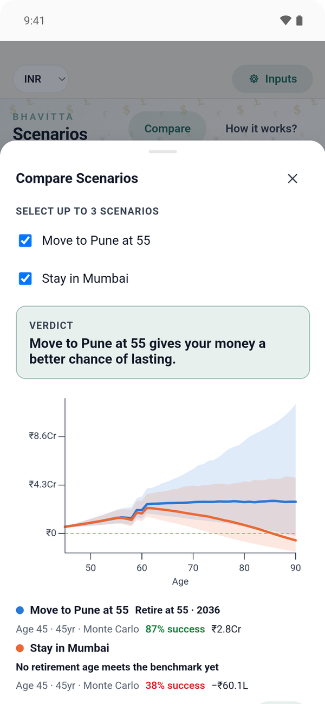

Most retirement calculators were built for someone else's country. They assume a single inflation rate, a tax rate you type in, a pension that rises with prices, and savings that sit in one account until you need them. A salaried couple in Mumbai has none of that: their costs depend on the city, their health premium climbs faster than inflation, most of their savings are locked in EPF, PPF and NPS until 58 or 60, and the EPS pension is a fixed rupee amount. Here is one such couple's question, worked in Bhavitta in rupees, with every number the app produced.
The couple and the two plans
- Both 45, planning to 90. Household of two, living in Mumbai.
- ₹60 lakh invested today, outside their retirement accounts.
- ₹25 lakh a year gross income. The app's Indian tax helper puts the new-regime tax at 12.8% of that.
- Resident cost of living from the app's estimates: ₹12.9 lakh a year for the two of them in Mumbai, ₹7.7 lakh in Pune, in today's money. Both cities inflate at 5% a year.
- EPF ₹20 lakh today, ₹1.8 lakh a year each from them and the employer, 8%, paid at 58. PPF ₹8 lakh, ₹1.5 lakh a year, 7.1%, maturing at 60. NPS ₹5 lakh, ₹1 lakh a year each, 10%, at 60, with 60% taken as a lump sum and the rest buying an annuity at 6.5%.
- EPS pension of about ₹1.07 lakh a year from 58 (25 years of service at the ₹25,000 wage ceiling), fixed in rupees: it does not rise with prices.
- Gratuity of ₹17.3 lakh at 55 (15/26 of a ₹1.2 lakh monthly basic for 25 years), tax-free under the ₹20 lakh limit.
- Health insurance at ₹40,000 a year today, rising 10% a year.
- Returns: the app's Balanced India Monte Carlo preset, 9.5% a year with 13% volatility, everything in rupees. The bar is 80% survival, judged on the bad-markets (P80) line.
| Plan A — Stay in Mumbai | Plan B — Move to Pune at 55 | |
|---|---|---|
| Ages 45 to 54 | Mumbai, working | Mumbai, working |
| Ages 55 to 90 | Mumbai, retired | Pune, retired |
| Planned retirement age | 55 | 55 |
What the readiness card says
Monte Carlo, 10,000 trials, each one a different sequence of yearly returns around the 9.5% mean.
| Stay in Mumbai | Move to Pune at 55 | |
|---|---|---|
| Survival at 55 | 38% | 87% |
| Readiness score | 45 | 89 |
| Headline | Not ready yet: short by 43% at 55 | Ready at 55 |
| First-year retirement spending, today's ₹ | ₹13.5L | ₹8.4L |
| Typical (P50) balance at 80, today's ₹ | ₹72L | ₹2.8 Cr |
| Bad-markets (P80) balance at 80, today's ₹ | runs out | ₹1.15 Cr |
Same couple, same savings, same retirement age; the only difference is where they spend the next 35 years. In Mumbai the plan holds in fewer than four of every ten market paths, and in a bad-markets path the money runs out before 80. In Pune it clears the 80% bar at 55. The app's explanation for the Pune plan: "Pension or Social Security plus your savings cover spending from age 55. The risky years are 85–89, if markets fall early."
Survival, score and headline are what the app shows for these two plans. The spending and balance rows come from the same engine and inputs run outside the app; Monte Carlo is seeded from the plan, so those runs can differ from the app's by a point.

Five things an Indian plan has to get right
Each of these is a feature added in Bhavitta 2.9; the India guide has the full list, the defaults and where they come from.
1. Your city's inflation, not the country's
Each Indian city in the app carries its own rate from state CPI-Urban data: 5% for Mumbai, Pune, Bangalore, Chennai and Hyderabad, 4.5% for Delhi and Goa. Any stage can override it as Local inflation. A ₹12.9 lakh Mumbai budget at 5% is about ₹91 lakh a year by 85, in the rupees of that year.
2. Health insurance that grows faster than everything else
The Health insurance life event grows at its own rate, 10% a year by default, against 5% general inflation. For this couple the premium is ₹40,000 now, about ₹1 lakh at 55 and ₹29 lakh a year by 90 in the rupees of that year; in today's money that is ₹64,000 at 55 and almost ₹3 lakh at 90. A plan that inflates health at the general rate understates the late years, which is exactly where both plans here are weakest.
3. Money you can't touch until 58 or 60
EPF, PPF and NPS are separate accounts in the app, not part of the investment pool. They grow at their own rates while you contribute and pay out on their own schedule: EPF about ₹1.35 crore at 58, then PPF and the NPS lump sum together about ₹1.08 crore at 60, plus an NPS annuity of about ₹2.2 lakh a year (rupees of that year). Between 55 and 58 the couple lives on the portfolio and the gratuity alone, which is why the bad-markets balance dips in those years before the payouts land.
4. A pension that doesn't keep up
EPS pays a fixed rupee amount. The app's Estimate EPS pension sets the pension stage to Fixed in rupees, so the ₹1.07 lakh a year buys less every year: at 5% inflation it is worth about half as much at 72 as at 58. Treating it as inflation-linked, as many calculators do, flatters a plan by a lot over 30 years.
5. Tax under either regime
For a stage with income, Estimate from Indian tax slabs computes the effective rate for the new or old regime, with the standard deduction, the 87A rebate, surcharge and cess. On ₹25 lakh under the new regime it is 12.8%; with large old-regime deductions it can be lower. The engine applies one rate per stage, so re-run the helper if your income changes much.
What if they retire at 50 or 52?
Survival for each stop-working age, with the move to Pune still at 55:
| Stop working at | Stay in Mumbai | Move to Pune at 55 |
|---|---|---|
| 50 | 2% | 19% |
| 52 | 11% | 53% |
| 55 | 40% | 86% |
Rows use 2,000 trials each, so the 55 row can differ by a point or two from the 10,000-trial figures above. Working past 55 is not shown: in these plans earned income already ends at 55.
Why does Pune do so much better?
- The city is the lever. Moving the same retirement from Mumbai to Pune cuts spending by about ₹5 lakh a year in today's money and takes the plan from 38% to 87%. Saving more for a few years does less than that.
- Everything here is in rupees. The Indian return presets are rupee returns, so the app treats the whole plan in rupees and sets rupee depreciation to 0%. If part of your money is in dollars, set that up deliberately; the Historical model replays US market history and suits a dollar portfolio.
- The weak years are the late ones. Health costs climb and the EPS pension shrinks in real terms, so both plans are most fragile in the 80s. A small change to health growth or to spending after 75 moves the answer; try both.
- Dollar savings change the picture. For an NRI moving back with a US portfolio, see Bangalore at 50 vs Seattle.
- Neither plan is a recommendation. The example leaves out tax on the portfolio's gains, property, children's education, parents' care and a second home. Each is a stage or a life event you can add.
Common questions
Can you retire at 55 in Mumbai with ₹60 lakh plus EPF, PPF and NPS?
Not reliably, for this couple. Only 38% of 10,000 Monte Carlo paths last to 90, the readiness score is 45, and in a bad-markets path the money runs out before 80. The same savings in Pune reach 87%.
How much cheaper is it to retire in Pune than in Mumbai?
In the app's resident estimates, a couple spends about ₹7.7 lakh a year in Pune against ₹12.9 lakh in Mumbai, in today's money: about ₹5 lakh a year less. Both cities inflate at 5% a year.
When do EPF, PPF and NPS pay out?
In this example EPF pays out at 58 (about ₹1.35 crore), PPF at maturity at 60, and NPS at 60, with 60% as a lump sum and the rest buying an annuity at 6.5%. Between 55 and 58 the couple lives on the portfolio and the gratuity alone.
Does the EPS pension increase with inflation?
No. EPS pays a fixed rupee amount, so the ₹1.07 lakh a year here buys about half as much at 72 as at 58 at 5% inflation. The app's Estimate EPS pension sets the pension to Fixed in rupees.
How much do you need to retire in Mumbai?
For a couple spending ₹13.3 lakh a year including health insurance, about ₹3.95 crore at 55 for an 80% chance the money lasts to 90, ₹4.35 crore at 50 and ₹4.70 crore at 45. The corpus by city table has all seven Indian cities.
Build it yourself
- Set the currency to INR at the top of the app. New plans then start with Indian defaults: resident cost of living, city inflation and the Balanced India return preset.
- On the Start tab, answer the guided questions with your age, savings, income and city. The tax default comes from the Indian slabs.
- On My Plan, add EPF, PPF and NPS from "Add a life event" → Retirement savings, and edit each balance and contribution. Add Health insurance and Gratuity from the Money group.
- Add a Pension stage and tap Estimate EPS pension.
- On Scenarios, make a copy, change its retirement city to Pune (or any of the seven Indian cities), select both and tap Compare.

Run it with your own numbers
Free on iPhone and Android. No account; your plan never leaves your phone.